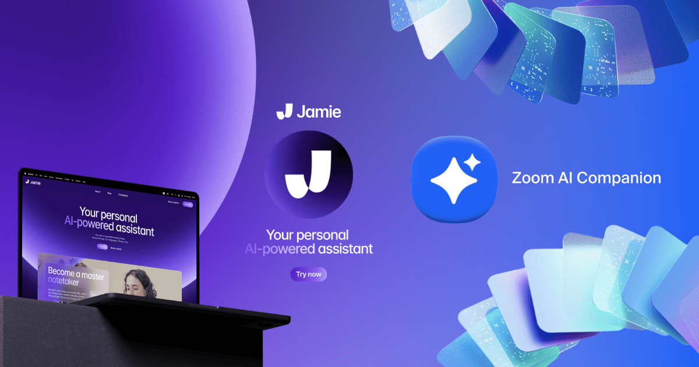

Cloud migration represents one of the most significant technology transformations nonprofits can undertake. Moving from traditional on-premises systems to cloud-based solutions offers tremendous benefits in cost savings, accessibility, security, and scalability. This comprehensive guide will walk you through every step of a successful cloud migration.
Understanding Cloud Migration
What is Cloud Migration?
Cloud migration is the process of moving data, applications, and IT processes from on-premises infrastructure to cloud-based services. For nonprofits, this typically involves:
- Email systems - Moving from local email servers to cloud services
- File storage - Transitioning from local file servers to cloud storage
- Applications - Moving software applications to cloud platforms
- Databases - Migrating data from local servers to cloud databases
- Backup systems - Implementing cloud-based backup solutions
Benefits for Nonprofits
Cloud migration offers specific advantages for nonprofit organizations:
Cost Savings
- Eliminate hardware maintenance and replacement costs
- Reduce energy and facility costs
- Access nonprofit pricing and grants from cloud providers
- Pay only for resources you actually use
Enhanced Accessibility
- Access data and applications from anywhere
- Support remote work and distributed teams
- Enable mobile access for field workers
- Facilitate collaboration between offices and partners
Improved Security
- Enterprise-grade security infrastructure
- Automatic security updates and patches
- Advanced threat protection and monitoring
- Compliance with industry standards
Scalability and Flexibility
- Scale resources up or down based on needs
- Add new users and services quickly
- Access advanced features as organization grows
- Adapt to changing technology requirements
Migration Planning Strategy
Assessment and Inventory
Begin your migration journey with a comprehensive assessment:
Current Infrastructure Audit
- Hardware inventory - Servers, computers, network equipment
- Software applications - Operating systems, productivity tools, specialized software
- Data assessment - File types, sizes, storage locations, access patterns
- Network analysis - Internet bandwidth, internal connections, security setup
Business Requirements Analysis
- Identify critical applications and dependencies
- Document workflow and collaboration needs
- Assess compliance and regulatory requirements
- Determine performance and availability expectations
Migration Strategy Development
Choose the right migration approach for your organization:
Migration Approaches
- Lift and Shift - Move existing applications to cloud with minimal changes
- Re-platforming - Make some optimizations during migration
- Refactoring - Redesign applications to take advantage of cloud features
- Hybrid approach - Keep some systems on-premises while moving others to cloud
Phased Migration Planning
- Phase 1: Email and basic productivity tools
- Phase 2: File storage and collaboration platforms
- Phase 3: Specialized applications and databases
- Phase 4: Advanced services and optimization

Need Help Planning Your Migration?
Get expert cloud migration planning from BSH Technologies
Get Migration Plan
Choosing Cloud Solutions
Cloud Service Models
Understand different cloud service options:
Software as a Service (SaaS)
- Examples: Microsoft 365, Google Workspace, Salesforce
- Best for: Email, productivity tools, CRM systems
- Benefits: Quick deployment, automatic updates, minimal IT management
- Considerations: Limited customization, ongoing subscription costs
Platform as a Service (PaaS)
- Examples: Microsoft Azure App Service, Google App Engine
- Best for: Custom application development and hosting
- Benefits: Faster development, scalable infrastructure
- Considerations: Requires technical expertise, platform dependencies
Infrastructure as a Service (IaaS)
- Examples: Amazon EC2, Microsoft Azure VMs, Google Compute Engine
- Best for: Complex applications, specific infrastructure needs
- Benefits: Full control, flexibility, cost optimization
- Considerations: Requires IT expertise, more management overhead
Popular Cloud Platforms for Nonprofits
Microsoft 365 for Nonprofits
- Free and discounted licenses available
- Integrated email, office applications, and collaboration tools
- Advanced security and compliance features
- SharePoint for document management and intranet
Google for Nonprofits
- Google Workspace with nonprofit pricing
- Google Ad Grants for marketing
- YouTube Nonprofit Program benefits
- Google Cloud Platform credits
Amazon Web Services (AWS) for Nonprofits
- AWS credits and promotional offers
- Comprehensive cloud infrastructure services
- Partner network with nonprofit specialists
- Training and certification programs
Implementation Process
Pre-Migration Preparation
Essential steps before beginning migration:
Data Backup and Cleanup
- Create comprehensive backups of all data
- Clean up unnecessary and duplicate files
- Organize data for efficient migration
- Test backup integrity and recovery procedures
User Account Planning
- Create user accounts in cloud platform
- Plan permission structures and access controls
- Develop user provisioning and deprovisioning procedures
- Prepare user training materials
Migration Execution
Step-by-step migration process:
Email Migration
- Planning: Choose migration method (cutover, staged, hybrid)
- Preparation: Set up mail routing and DNS records
- Migration: Transfer mailboxes and public folders
- Testing: Verify email delivery and access
- Completion: Update DNS and decommission old system
File Storage Migration
- Assessment: Analyze file sizes, types, and access patterns
- Preparation: Organize folder structures and permissions
- Migration: Transfer files using appropriate tools
- Verification: Confirm data integrity and accessibility
- Optimization: Configure sync clients and mobile access
Application Migration
- Assessment: Evaluate cloud compatibility
- Testing: Perform migration testing in isolated environment
- Migration: Move applications and data
- Integration: Connect with other cloud services
- Validation: Test functionality and performance
Testing and Validation
Ensure successful migration through thorough testing:
Functional Testing
- Test all application features and workflows
- Verify data accessibility and integrity
- Test integration between systems
- Validate user permissions and security controls
Performance Testing
- Monitor application response times
- Test system performance under normal load
- Evaluate network performance and latency
- Identify and address bottlenecks
Post-Migration Optimization
Performance Optimization
Maximize the benefits of your cloud investment:
Resource Optimization
- Monitor resource usage and costs
- Right-size cloud resources based on actual needs
- Implement auto-scaling where appropriate
- Use reserved instances for predictable workloads
Security Enhancement
- Configure advanced security features
- Implement multi-factor authentication
- Set up security monitoring and alerts
- Conduct regular security assessments
User Training and Adoption
Ensure successful user adoption of new cloud systems:
Training Programs
- Develop role-specific training materials
- Conduct hands-on training sessions
- Create quick reference guides and documentation
- Establish ongoing support channels
Change Management
- Communicate benefits and expectations clearly
- Address user concerns and resistance
- Provide adequate support during transition
- Celebrate successful adoption milestones
Ongoing Management
Maintain and optimize your cloud environment:
Monitoring and Maintenance
- Set up monitoring dashboards and alerts
- Schedule regular system health checks
- Monitor costs and usage patterns
- Plan for capacity and feature updates
Continuous Improvement
- Gather user feedback and suggestions
- Evaluate new cloud features and services
- Optimize workflows and processes
- Plan for future technology needs
Common Migration Challenges and Solutions
Technical Challenges
- Bandwidth limitations: Plan migration during off-hours, use data migration services
- Application compatibility: Test thoroughly, consider modernization
- Data security concerns: Implement encryption, use secure transfer methods
- Integration complexity: Plan integration points, use APIs and connectors
Organizational Challenges
- User resistance: Provide training, communicate benefits, offer support
- Budget constraints: Phase migration, leverage nonprofit discounts
- Limited IT expertise: Partner with cloud specialists, invest in training
- Regulatory compliance: Understand requirements, choose compliant solutions
Cost Management and Optimization
Nonprofit Pricing Programs
Take advantage of special nonprofit pricing:
- Microsoft: Free Office 365 E1 licenses, discounted premium plans
- Google: Free Google Workspace Basic, discounted business plans
- AWS: $2,000 in annual credits, promotional offers
- Salesforce: 10 free licenses, discounted additional licenses
Cost Optimization Strategies
- Monitor usage regularly and adjust resources
- Use free tiers and credits effectively
- Implement automated cost controls and alerts
- Choose the right service tiers for your needs
- Archive old data to lower-cost storage tiers
Professional Migration Support
Cloud migration can be complex, especially for organizations with limited IT resources. BSH Technologies provides comprehensive cloud migration services specifically designed for nonprofit organizations.
Our migration services include assessment and planning, implementation support, user training, and ongoing optimization to ensure your migration is successful and delivers maximum value for your organization.
Ready to move to the cloud? Contact BSH Technologies for a free cloud readiness assessment and discover how we can help your nonprofit leverage the power of cloud computing.